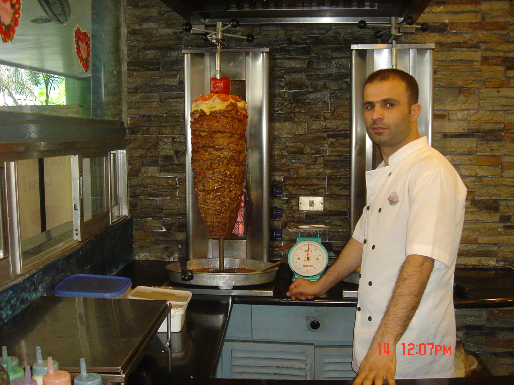
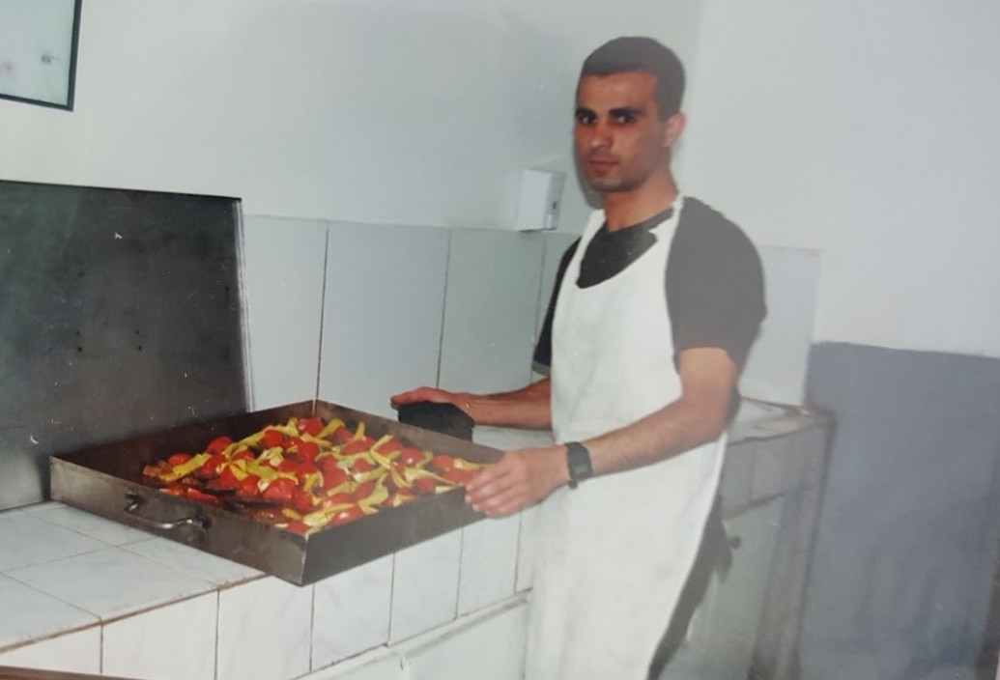
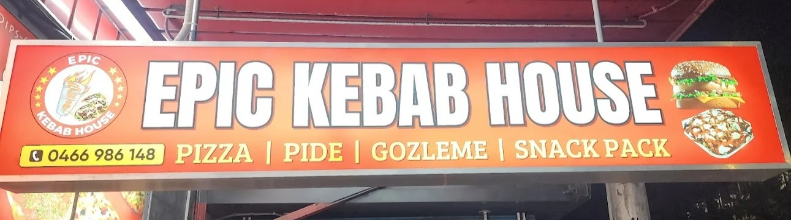

About Us
The Flavor Behind Epic: Chef Rasim Gungor (RAS)
From the heart of Istanbul to the vibrant streets of Sydney, Chef Rasim Gungor’s journey is a recipe rich in heritage, passion, and global adventure.
Raised in the kitchens of a fine-dining restaurant and five-star hotel, Rasim mastered the art of cooking before most kids could even read a recipe.  He opened his first restaurant in Istanbul in his twenties and soon found himself cooking for the Turkish Army — serving generals with the same care he gave to family dinners.
In 2004, Rasim brought the warmth of Turkish cuisine to Manila, opening one of the city’s first authentic Turkish restaurants. His food became more than a meal—it became a cultural bridge.
By 2007, he landed in Australia and explored industries far from the kitchen. But his love for food was unstoppable.
In 2024, he opened Epic Kebab House in Sydney—a fusion of tradition and bold flavors, rooted in his love for sharing unforgettable meals. serving up mouthwatering kebabs, his famous homemade chili sauce, and unforgettable customer care at prices that keep locals coming back.
Epic Moments

With a second branch opening in the Philippines, Rasim’s mission is clear:
"to serve stories through food, one juicy kebab at a time."
👉 Taste the Journey – View Our MenuEpic Kebab House – St Leonards, NSW
Opened in February 2024, Epic Kebab House has quickly become a go-to destination for mouthwatering Turkish flavors on Sydney’s North Shore.

Nestled in the heart of St Leonards (NSW 2065), this warm and welcoming spot is run by Ras, a seasoned chef whose journey from the kitchens of Türkiye—including time in the Turkish army—to the bustling streets of Sydney is served up in every bite.

With a reputation for generous portions, affordable prices, and the beloved homemade chili sauce, Epic Kebab House brings tradition, bold flavor, and big hospitality to the local food scene.
Whether you're stopping by for a quick lunch or a feast with friends, one thing's certain: at Epic Kebab House, you arrive hungry and leave happy.